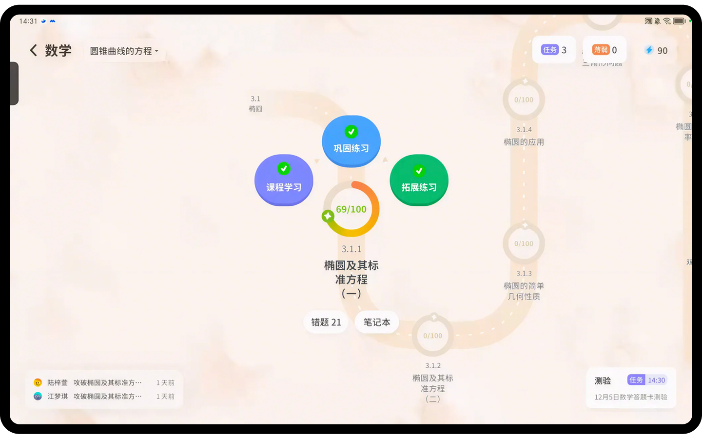

AI 学习闭环
以诊断、学习、练习、反馈和复盘构成连续过程，把每一次学习行为转化为可理解、可调整、可追踪的成长线索。
学情识别
路径推荐
即时答疑
阶段复盘
AI + 真人
知识效率与教育温度协同
三端闭环
学生端、导学端、机构端连续反馈
长期运营
从产品导入到市场复盘持续支持
Platform Bento
星鹿爱学负责学习路径、知识讲解与即时反馈；逐鹿未来负责场景落地、团队训练与运营支持，让系统能力真正进入机构日常。
以诊断、学习、练习、反馈和复盘构成连续过程，把每一次学习行为转化为可理解、可调整、可追踪的成长线索。
导学老师关注目标、习惯、动力和表达，让孩子不仅完成任务，也逐步形成自主学习能力。

用清晰的阶段反馈呈现学了什么、卡在哪里、下一步如何安排，降低沟通成本。
面向自习室、托管班、教培机构与区域伙伴，提供产品导入、服务流程和市场素材支持。
聚焦真实产品能力、服务流程和交付标准，不做结果承诺，用长期服务建立信任。
Learning Workflow
系统不只记录结果，而是把学习过程拆解为可以被看见、被理解、被调整的连续动作，帮助机构形成标准化服务体验。
通过学习行为和练习表现识别薄弱点，让孩子和老师先看清当前位置。
围绕目标、掌握度和任务节奏安排学习内容，让每次学习更有方向。
AI 完成知识讲解、答疑和练习反馈，导学老师关注习惯、动力和表达。
机构用数据和服务记录复盘每周进展，持续优化学习安排和用户沟通。
Enterprise Delivery
从产品演示、合作评估、团队培训到运营陪跑，逐鹿未来把 AI 教育产品转化为可被机构执行的流程、内容和服务标准。